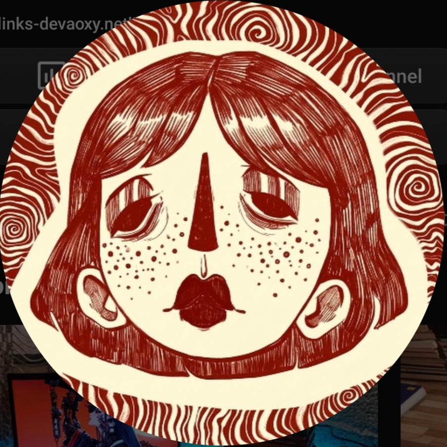
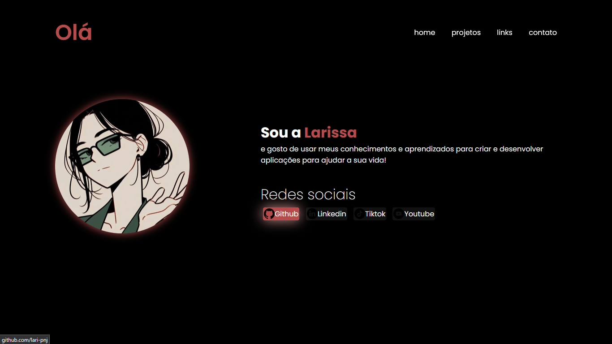

Olá, eu sou a Larissa
Programadora apaixonada por terminal, automação e arquitetura de sistemas. Construo soluções em Python e utilitários customizados para extrair o máximo de performace de ambientes operacionais.
.png)
Otimizador - Aoxy V1
O Aoxy V1 foi desenvolvido com o objetivo de simplificar e centralizar o acesso a configurações essenciais do WINDOWS. A ferramenta reúne em um só lugar funções práticas para otimizar o desempenho do sistema

7 Noites na Taberna
Um jogo de RPG baseado em texto para terminal. Apresenta uma narrativa original e interativa, servindo como um excelente projeto para demonstrar lógica de programação avançada em Python.

Link-in-Bio
Página de links personalizada inspirada no Linktree, desenvolvida com HTML e CSS para centralizar minhas redes sociais em um único lugar. Foco total em design responsivo e acessibilidade mobile."
Dev pro - GUIA
O Dev Pro é um material GRATUITO desenvolvido e organizado no notion para ajudar você a se encontrar na programação e dar os primeiros passos. O Guia reúne as informações essenciais para clarear o caminho de quem quer começar na aréa, mas ainda não sabe por onde ir.
Se você tem interesse em colaborar, solucionar dúvidas, propor ou solicitar um projeto, entre em contato!